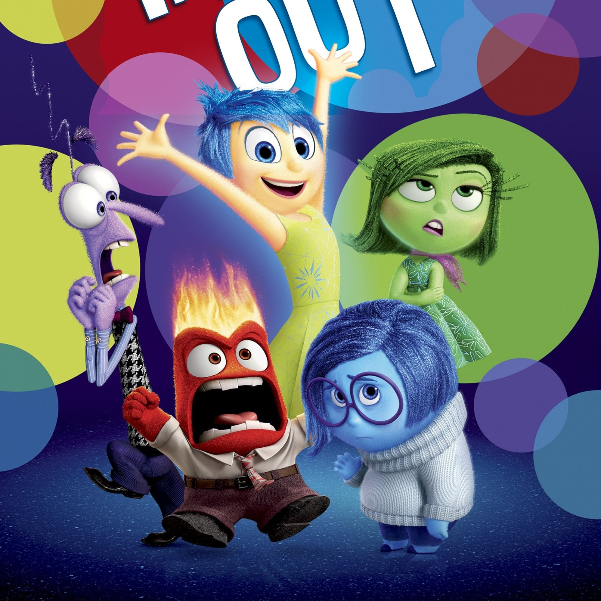

SEOL JI YUN
내 개인 페이지에 온 걸 환영해.
나와 함께하는 모든 순간 순간이,
화려하게 빛날거야. 알아들었으면 끄덕여.
대학생활 2회차!의 삶이 궁금하다면?
아래로↓
인사이드 아웃
11살 소녀 라일리의 머리 속에서 일어나는 감정들의 모험을 그린 애니메이션이다. 새로운 환경에서의 생활에 적응하지 못하는 라일리의 혼란스러운 감정을 엿볼 수 있다. 라일리의 머리 속에 있는 감정들을 표현하는 방식이 놀랍고 유쾌하다. 기쁨이가 과연 좋은 역할일까?